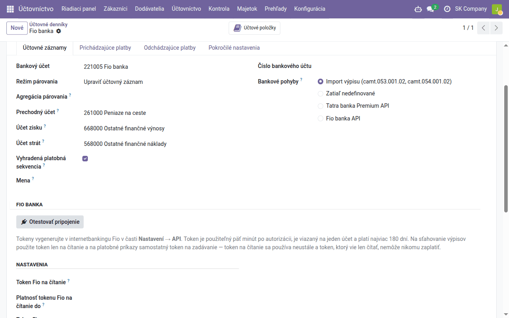

Návod k úlohe
Synchronizácia bankových účtov
Pohyby z banky prichádzajú do Odoo samy — Fio banka cez vlastný token, Tatra banka cez Premium API — bez sťahovania a importu súborov, so symbolmi a účtom protistrany.
| Krajina | Slovensko |
|---|---|
| Edícia | Odoo Community |
| Zahŕňa | account_fio, account_statement_fio, account_tatrabanka (dodáva sa samostatne), account_statement_tatrabanka (dodáva sa samostatne), account_tatrabanka_webhook (dodáva sa samostatne), l10n_cssk_payment_symbols, l10n_cssk_payment_symbols_oca |
Na čo slúži tento návod
Pri synchronizácii sa bankový denník plní sám: Odoo sa každú hodinu opýta banky na nové pohyby a vytvorí z nich riadky výpisu s účtom protistrany, variabilným, konštantným a špecifickým symbolom a správou pre príjemcu. Netreba nič sťahovať z internetbankingu ani importovať. Riadky sa potom párujú rovnako ako z importovaného výpisu — automaticky podľa variabilného symbolu a ručne v Párovať, ako opisuje návod Banka.
| Banka | Ako sa pripája | Kto ju zapína |
|---|---|---|
| Fio banka | token z internetbankingu Fio, vložený do bankového denníka | vy — modul Fio banka — bank statements z Aplikácií |
| Tatra banka a ďalšie banky cez Premium API Tatra banky | autorizácia v banke, ktorú udelíte vy; prístupové údaje k banke drží Data Dance | náš tím — požiadajte o zapnutie |
Ostatné banky zatiaľ výpis neposielajú samy: stiahnite výpis CAMT.053 a naimportujte ho podľa návodu Banka. Banka sa na denník napája vždy len jednou cestou — pole Bankové pohyby na denníku má jedinú hodnotu, takže ten istý pohyb nepríde dvakrát.
Fio banka
Token v internetbankingu
V internetbankingu Fio otvorte Nastavení → API a vytvorte token len na čítanie k účtu, ktorý chcete synchronizovať. Token patrí jednému účtu, platí najviac 180 dní a dá sa použiť päť minút po autorizácii. Zapíšte si aj dátum konca jeho platnosti. Na platobné príkazy z Odoo by ste potrebovali samostatný token na zadávanie; na výpisy stačí token na čítanie a ten nikomu nezaplatí.
Nastavenie denníka
- Raz nainštalujte z Aplikácií modul Fio banka — bank statements (v zozname aplikácií má anglický názov).
- Otvorte bankový denník účtu vo Fio (Účtovníctvo → Konfigurácia → Účtovníctvo → Účtovné denníky; nový založíte podľa návodu Banka). Jeho Číslo bankového účtu musí byť účet, ku ktorému token patrí.
- V časti Fio banka vyplňte Token Fio na čítanie a Platnosť tokenu Fio na čítanie do a kliknite na Otestovať pripojenie. Odoo sa raz spojí s Fio, zobrazí, čo banka o účte hlási (číslo účtu, IBAN, menu), a zapíše to do histórie denníka. Token iného účtu alebo účtu v inej mene, než má denník, sa odmietne.
- Bankové pohyby prepnite na Fio banka API, zvoľte Režim sťahovania Fio (nižšie) a kliknite na Stiahnuť hneď.

Od tej chvíle sa denník sťahuje každú hodinu. Tokeny vidia a zadávajú len správcovia. Prehľad všetkých denníkov s tokenom a dátumami konca ich platnosti je v Účtovníctvo → Konfigurácia → Účtovníctvo → Fio banka; uplynutý dátum je červený. Pred koncom platnosti vytvorte v internetbankingu nový token a vymeňte ho na denníku.
Režim sťahovania
| Režim sťahovania Fio | Čo urobí každé stiahnutie | Kedy ho zvoliť |
|---|---|---|
| Pohyby (predvolený) | načíta pohyby posledných Dní spätného čítania (predvolene 3) a pridá tie, ktoré Odoo ešte nemá | bežné každodenné párovanie |
| Oficiálne číslované výpisy | stiahne každý výpis vydaný bankou, ktorý v Odoo chýba, s počiatočným a konečným zostatkom banky | keď chcete v Odoo výpisy totožné s výpismi banky |
| Od záložky uloženej na tokene | stiahne všetko od záložky, ktorú vedie Fio | len pri tokene, ktorý nič iné nepoužíva |
Pohyby za staršie obdobie stiahnete tlačidlom Stiahnuť rozsah… na denníku. Pohyby staršie ako 90 dní dá Fio len vtedy, keď v internetbankingu odomknete históriu tokenu (Nastavení → API, zámok) — odomknutie platí desať minút.
Ak ste doteraz importovali súbory GPC, prejdite na synchronizáciu na hranici dňa: naimportujte posledný výpis a sťahovanie spustite nasledujúci deň — pohyby z GPC a z API sa navzájom nespoznajú.
Tatra banka
Premium API Tatra banky pripojí účty v Tatra banke a cez tú istú autorizáciu aj účty v niektorých ďalších slovenských bankách. Prístupové údaje k banke vo vašom Odoo nie sú — drží ich služba Data Dance. Pripojenie zapne náš tím; vy potom raz udelíte súhlas v banke:
- Účtovníctvo → Konfigurácia → Tatra banka Premium API → Autorizácie → Nové, vyberte aplikáciu, ktorú pripravil náš tím, uložte a kliknite na Autorizovať v banke.
- Na autorizačnom portáli Tatra banky sa prihlási osoba, ktorá má k účtom aspoň pasívne práva do internetbankingu, a označí účty, ktoré sprístupní. Dokončite to do 30 minút.
- Späť v Odoo sa bankový denník, ktorého číslo účtu je presne sprístupnený IBAN, pripojí sám. Ostatné sprístupnené účty priradíte tlačidlom Pripojiť účty — ku každému Existujúci denník, Nový denník alebo Nepripájať.
- Na pripojenom denníku nastavte Bankové pohyby na Tatra banka Premium
API. Na karte Tatra banka zvoľte Import: Transakcie, alebo
Transakcie + mesačné výpisy (jeden výpis za mesiac, napríklad
TBSK 2026-10), a kliknite na Stiahnuť transakcie.
Odvtedy sa transakcie sťahujú každú hodinu; tlačidlom Stiahnuť obdobie… doplníte staršie (15 mesiacov dozadu pri účtoch v Tatra banke, 13 pri účtoch v iných bankách). Importujú sa len zaúčtované pohyby.
Súhlas platí 180 dní a patrí osobe, ktorá ho udelila. Dva týždne pred koncom dostane autorizácia aktivitu Prístup do Tatra banky vyprší …; súhlas obnovíte tlačidlom Autorizovať znova v autorizácii, denníky zostanú pripojené. Ak osoba so súhlasom odchádza, nechajte autorizovať niekoho iného skôr, než odíde.
Kontrola
- Na denníku vidíte Posledné stiahnutie z Fio alebo Naposledy stiahnuté / Posledný pohyb (Tatra banka).
- Zlyhané sťahovanie sa zapíše do histórie denníka s dôvodom od banky; ostatné denníky sa stiahnu aj tak.
- Na konci mesiaca porovnajte konečný zostatok v Odoo so zostatkom vo výpise banky, ako v návode Banka — zostatky mesačných výpisov sa počítajú z riadkov, nie preberajú z banky.
Zaúčtovanie riadkov a párovanie sa nemení: opisuje ho návod Banka.